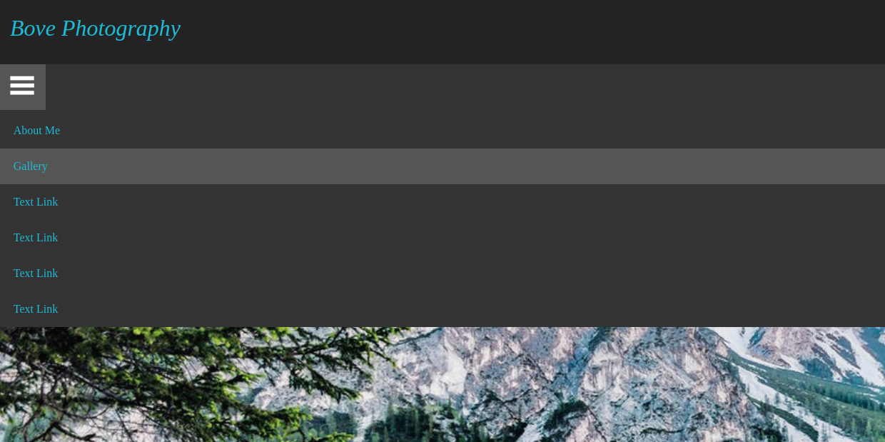
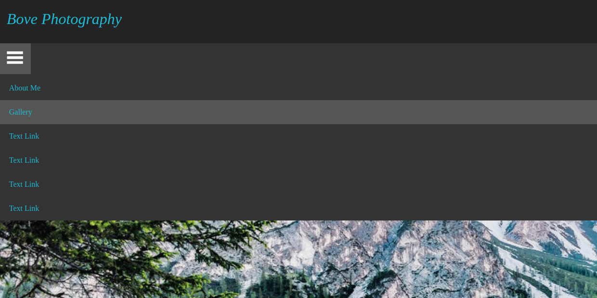

Programming Languages
Bash
I use Linux operating systems on my personal computers, usually Linux Mint, but I am also familiar with other distributions such as Gentoo and Ubuntu. This has lead to me getting very familiar with Bash to use use my computer, as it saves a lot of time especially when I am setting up a new computer.
C++
C++ is amazing for its speed in applications where it matters such as algorithmic trading and its low level is great for working with hardware such as robotics. Our automonous robot Lenny, which won the Senior Custom division and North America Award at the Trinity Fire Fighting Robot Contest, was written in C++ and deployed on an Arduino and Raspberry Pi in order to handle the various sensors.
Clojure
Clojure is a very interesting and fun language that I originally learned to expose myself to functional programming, but I fell in love with the immutable data structures, uniform structure, macros, and compatability with Java.
CSS
I use this style sheet language to make websites (like this one!) look better than they would with just HTML. Cascading Style Sheets enables me to do a lot of interesting thing stylistically like layout the page in an aesthetically pleasing way and when paired with Javascript allows me to add effects such as drop-down menus and slideshows.
 

HTML
Hypertext Markup Language allows me to write web documents such as the website you are currently reading. It is also the language that started my interest in computers as I have been coding HTML since middle school when I discovered it and wanted to make a video game website using it.
Java
Serving as my first true programming language (as opposed to markup languages, etc.), Java still holds a place in my heart and is one of, if not my most used language. It is a versatile, Object-Oriented, enterprise language which I've used to write Android applications, web servers, blockchains, and solve a variety of problems in computer science, economics, finance, and mathematics with.


Javascript
Javascript was something I picked up as I went while working on web design and development. It allows me to define how a webpage and elements on it will act, and is on display in my slideshows, drop-down menus, and many other places on my websites. For example, if you click the image below it will play audio from one of my Python applications Weather Waves.
Python
My other "main language" would be Python due to its simple syntax and the ability to very quickly develop in it. I have used Python in a variety of settings including physics, algorithmic trading, and data science. WeatherWaves is an application I have been writing for Titan Radio to update the weather conditions when no one is on the air. To hear a sample of the audio it produces, click the above image!
R
R is another amazing programming language for statistical computing and graphics that I use for data sets, primarily handling financial time series and to perform hypothesis tests such as the t-test.
Solidity
A contract-oriented language targeted at the Ethereum Virtual Machine, I have used Solidity to develop smart contracts and work on decentralized applications.
XML
Extensible Markup Language (XML) allows me to layout my Android apps. The user interfaces of all of my Android applications use XML to layout the various elements which are then inflated and manipulated using Java.